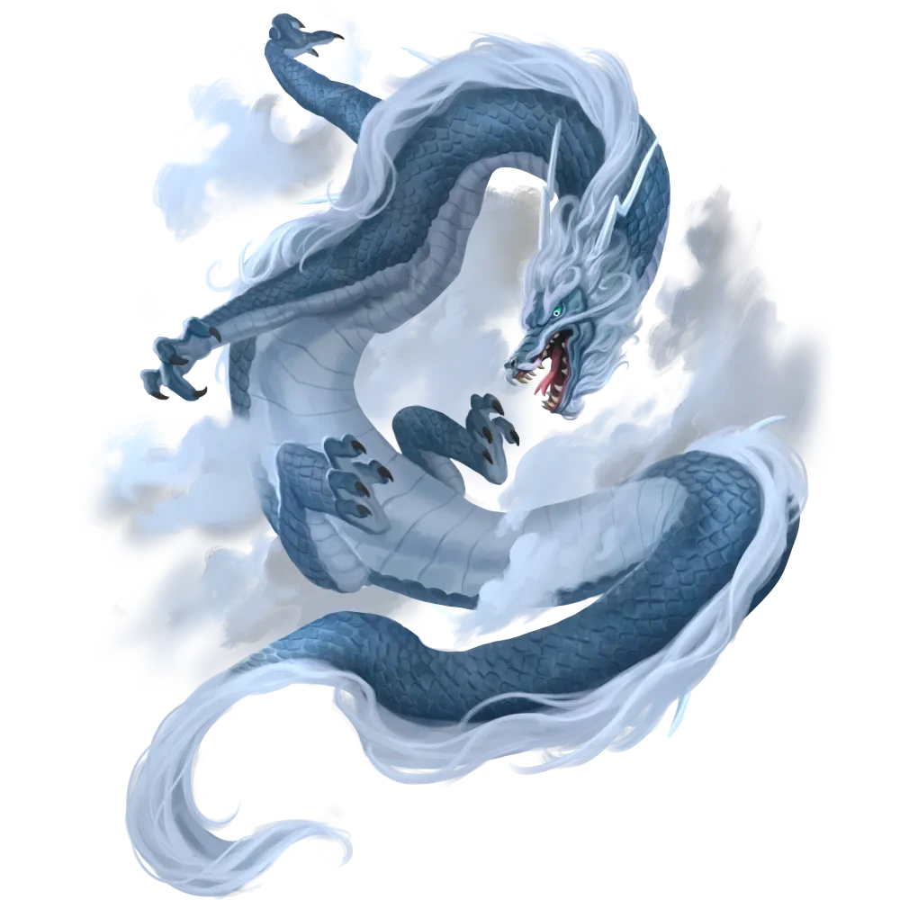

各年龄段数据卡
作为皇权龙族中的贤哲，天空龙在高耸入云的崇山之巅筑巢安居――他们的峰顶居所高逾万仞，甚至直刺云霄。在那里，他们远离尘世的喧嚣纷扰，过着宁静致远的宗教冥思生活。 尽管大多数天空龙都十分乐意隐居在圣殿般的巢穴之中，度过悠缓而潜心冥想的岁月，但尘世却极少容许他们真正超然物外。事实上，渴求天空龙传说中睿智忠告与高明指点的凡人，总会不可避免地踏上前往这些神圣疆域的险途，甘冒生命危险、挑战自身极限，顶着酷烈天象与万丈高寒寻访启迪。 久而久之，大多数天空龙都赢得了贤者、先知与解惑良师的盛名；无论何种种族的生灵，都可以信赖他们耐心倾听自己的苦恼，并给出恰到好处的指点，帮助求教者自行领悟跨越难关的办法。然而，天空龙几乎从不亲自出手替人解决那些难题。 天空龙巢穴由于坐落在穿云接天的最高峰巅，相比栖息在寻常易达之地的巨龙，天空龙的巢穴通常无需布置太多防御工事。正因如此，他们有时会更注重美学韵味、对称格局或冥想氛围，而非纯粹的防御性能。话虽如此，任何能够毫不费力登上天空龙巢穴的敌对生物多半都危险至极；因此天空龙一旦布下防御手段，势必都凶悍凌厉到了极点――面对足以攀越万仞绝峰的强敌，半吊子的防备根本无济于事。 较年轻的天空龙依靠与前肢融合、形似双翼的鳍翼来引导飞行，但他们的鳞片天生生长与硬化得较为缓慢。因此，他们会运用自身掌控金元素的力量汲取宝库中矿石的精华；随着岁月流逝、年岁渐长，他们的鳞甲便会日渐强韧，色泽也愈发深沉绚丽。 天空龙与大多数其他皇权龙都相处融洽，尤其是至高龙与海龙。至于冥界龙，双方的性情理念虽然算不上投契，但好在彼此一个居于九霄云外、一个深藏地底深渊，相隔万里而互不打扰。唯独森林龙往往对天空龙颇有微词：在森林龙看来，坐拥如此绝佳的隐世宝地，居然不将其改造成遍布陷阱、专供虐杀凡人的死亡猎场，简直是暴殄天物。森林龙实在无法理解，面对打扰自身清静、擅闯领地的凡人，天空龙怎么会蠢到用智慧箴言去奖赏他们。 天空龙宝库天空龙偏爱收集具有宗教、哲学或冥思意义的器物，借以精进自身的精神觉悟。当然，这绝不意味着他们奉行苦行主义或排斥物质财富――珍贵的艺术品、精美的珠宝或是成堆的钱币，对天空龙而言依然与对其他许多巨龙血统一样令人舒心，只不过未必会像其他巨龙那样将其摆在藏品的核心位置罢了。有些天空龙选择囤积智慧典籍与教义箴言，恰如青铜龙或绿龙囤积载满研究成果与失落学识的古籍一般。不过依我之见，天空龙与青铜龙更为相似――他们都习惯守着满腹资讯避世独居，而非深入实地考察去推动学术前沿的发展。 太古天空龙天空龙栖息于巍峨群峰之巅，向不畏艰险攀登而上、恭敬求教的拜访者赐下智慧与解答。而在他们之中，太古龙往往居住在比寻常天空龙更加人迹罕至的绝境，例如整条山脉最高主峰的极顶，甚至是悬浮于云海之上的秘境仙阙――唯有超越凡人常理所能涉足的极限高空，方能一窥门径。 无论太古天空龙选择居于何处，哪怕对意志最坚定的求道者而言，前往拜谒也永远是一场严峻考验；但他们并非残忍好杀之辈――他们会设法提前亮明攀登途中的重重艰险，劝退那些缺乏足够决心与本领的求教者，而不会蓄意诱使能力不足之人踏上多半会因意外或补给耗尽而凄惨丧命的绝路。 问策者的规矩天空龙――尤其是太古天空龙――有时会面临一个幸福的烦恼：无论他们的山巅居所多么与世隔绝，无论通往峰顶的攀途多么陡峭凶险，一旦其睿智盛名远播四方，便难免引来三教九流的恳求者络绎不绝地登门求教。在一定限度内，只要来访者懂得尊重巨龙及其宝贵时间，天空龙倒也颇为享受这种交流；然而当某条天空龙名气太盛时，前来求取指点的需求往往会超出巨龙的时间或耐心上限。遇到这种情况，天空龙便会立下因龙而异的额外规矩，进一步筛选求教者――例如要求旅人先替自己完成特定委托、解开一连串谜题，或是通过某场考验品性的试炼。颇具讽刺意味的是，这些附加门槛有时反而会激发更多凡人前去挑战。 尽管年轻的天空龙鳞片发育迟缓，但历经千百年沉眠于矿石之上、日夜盘绕汲取金石精华之后，太古天空龙的鳞片不仅色泽愈发深邃凝重，其防护性能甚至比其他巨龙还要强悍得多。事实上，正因常年累月稳步浸润矿石威能，每当近处敌人挥击太古天空龙时，他们充盈着金元素之力的龙鳞便能爆发出雷霆万钧的反击。 太古天空龙几乎不再需要前臂上翼状鳍片的辅助，因此随着年岁渐长，这些鳍翼会逐渐退化内敛，最终能随心所欲地轻松收拢。即便如此，哪怕与众多振翼翱翔的其他巨龙相比，他们的飞行能力依然强横无匹――太古天空龙凭借对金元素的精深掌控凝聚电荷，借由电磁之力御空疾驰，同样能达到凌虚翱翔的绝妙效果。 云巅珍馐相比绝大多数同族，天空龙过着更为恬淡静谧、潜心冥思的生活，因此无需像许多其他巨龙那样频繁进食。从整体而言，巨龙一族在无需消耗太多能量时本就能够放缓自身的新陈代谢――这一点在巨龙一睡数月乃至数年的习性上体现得最为明显；倘若中途必须醒来觅食，那种漫长的沉眠根本无从谈起。天空龙运用的正是同一种生理机制，只不过并非用于冬眠，而是将这段时光投入深度冥想之中。然而如此一来，每当他们决定进食时，就必须一次摄入足以支撑许久的丰盛食物；于是有些天空龙干脆倾力操办，为自己摆下一场宛如宗教圣宴般的盛大筵席。另一些天空龙则认为此举过于铺张炫耀，更倾向于一次吃下大量简朴素食，或是平时少量规律进食、唯独在即将展开超长冥想之前才大快朵颐一顿。 历经数百年乃至上千年的漫长岁月，太古天空龙堪称活生生的宗教典籍宝库，对自身的冥想修行与神圣仪轨怀有深沉悠长的耐心。然而即便如此，他们也绝不会轻易姑息蠢货――他们那备受称道的涵养，半点也不会留给胆敢对自己出言不逊或拔刀相向的狂徒。太古天空龙深信，凭自身的威能、年岁与智慧，自己理应无条件享有至高无上的敬重；但前来拜谒的恳求者却并无这般待遇。对于求取忠告或援助之人，巨龙的尊重从不会白白赐予，而必须靠他们自身的言行举止在巨龙面前亲手赢得。那些献上贡礼之人――尤其是事先悉心考据过天空龙的喜好并投其所好，或是在自身财力范围内倾尽所能之人――在展现诚意方面无疑占尽优势。毕竟天空龙终归也是巨龙，同样喜爱奇珍异宝。 冥想技法不同的冥想流派讲究截然不同的身心修持之法。尽管每条天空龙的冥想技法各有千秋，但相当一部分天空龙都具备几项鲜明的共同特征。从体态姿势来看，他们通常采取放松盘蜷的冥想姿态，而非将修长龙躯完全舒展摊开；具体而言，他们大多习惯盘绕在某种金属立柱上入定，将金属柱当作辅助冥想的法器。有些天空龙甚至备有不同材质的金属立柱，专门用于不同主题的深思玄想，因为他们认为每种金属都对应着独特的心境状态与灵性特质。而在精神修持层面，天空龙更常采用深度聚焦于某个根本问题或哲理命题的观想冥思，而非彻底放空心神以求天人合一。即便如此，世间也依然有许多特立独行的例外，践行着五花八门的冥想秘法！ |
 天空龙 |